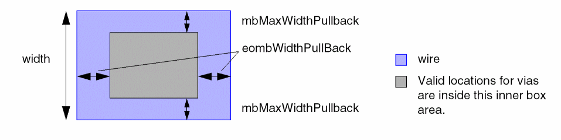
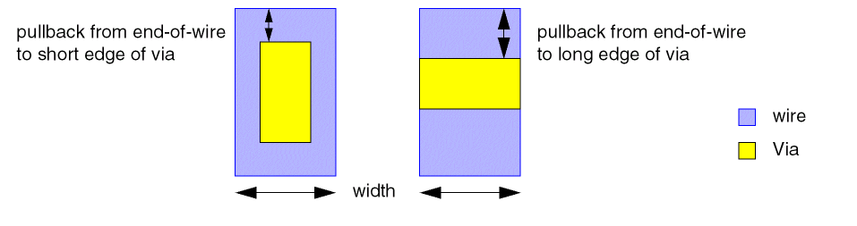
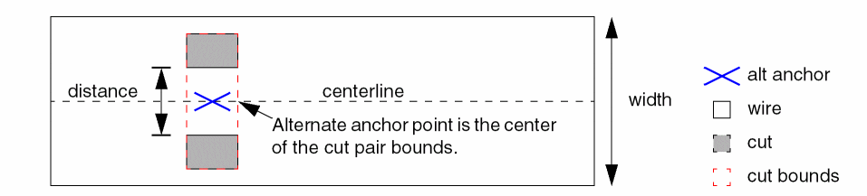
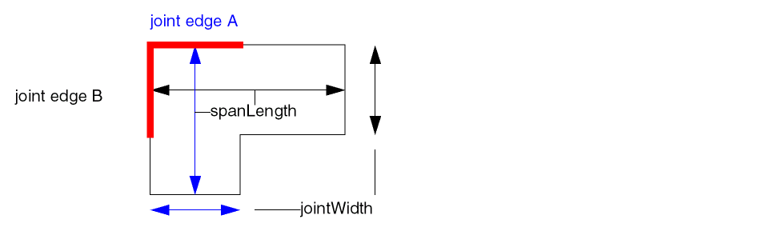
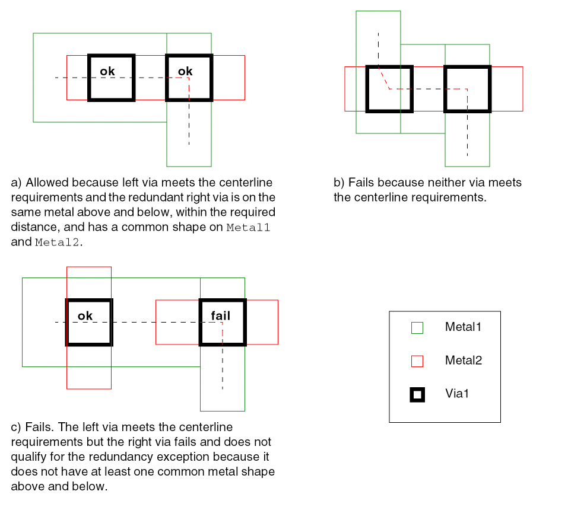

minCenterLineExtension
Specifies whether a centerline algorithm must be used to identify valid locations for via placement on a given cut layer and metal above or below. By definition, these locations guarantee that correct enclosures are available. The algorithm is applied to rectangles or polygons of connected/merged metal shapes.
The valid locations are based on via anchor points. By default, the center of a cut shape, regardless of dimension, is a valid anchor point.
The parameters for this constraint are used to specify the following:
- Alternate anchor points for rectangular cut classes and redundant cuts
- Joints and bends where vias are not allowed
minCenterLineExtension Quick Reference
Value Type
minCenterLineExtension constraints have a BoolValue.
Parameters
-
centerLineDef(IntValue, required) specifies which centerline algorithm to use. Currently, only a value of 1 is accepted and requires that thembMaxWidthparameter also be set. -
mbMaxWidth(Value, required) specifies that the constraint applies for wire widths less than this value, in user units. This parameter is required whencenterLineDefis set to 1. -
cutClass(DualValue, optional) specifies that the constraint applies for the given cut class width and height. -
mbMaxWidthPullBack(DualValue, optional) For wire widths greater than or equal tombMaxWidth, the distance from a via edge to the side edge of the wire must be greater than or equal to the first pullback value, in user units.
 -
eombWidthPullBack(OneDDualValueTbl, optional) specifies short edge and long edge pullbacks as a function of the wire’s end-of-line width in the following format:-OneDDualValueTbl {
f_width1f_short1f_long1…f_widthnf_shortnf_longn}
The distance from the end-of-wire edge to the via edge (short or long) must be greater than or equal to the given pullback distance. -
eombWidthCoincidentOK(Int1DTblValue, optional) specifies whether vias can be coincident with the end-of-line as a function of the wire’s end-of-line width in the following format:-Int1DTblValue {
f_width1b_coincidentOK1…f_widthnb_coincidentOKn} -
numCuts(IntValue, optional) specifies that the constraint applies only to a double-cut via. If more than oneminCenterLineExtensionconstraints are defined for a cut class in an OR group, setnumCutsto 2 to make those constraints mutually exclusive. -
numCutDistance(Value, optional) specifies that the constraint applies only if the distance between a via cut pair is less than or equal to this value. This parameter applies only whennumCutsis set to2.
The following parameters specify conditions for alternate anchor points:
-
shortEdgeCenterAnchor(BoolValue, optional). When set totrue, the center of the short edge for a rectangular cut class is an alternate anchor point. -
redundantCutCenterAnchor(ValueArrayValue, optional) specifies a range of widths, in user units, and a distance, in user units, between two cuts in the following format:-ValueArrayValue {
When two cuts are <= f_distance apart, and are aligned on the wire width >= f_width1 and <= f_width2, an alternate anchor point is calculated as the center of the cut pair bounds, which must be on the wire’s centerline. The alternate anchor point of the cut pair will be used if the cut anchor fails to fall on the centerline.f_width1f_width2f_distance}

The following parameters determine the valid via locations at joints or bends:
-
jointWidth(Value) specifies that the constraint applies only to joints whose width is less than this value, in user units. This parameter is required whenviaToJointDistanceorviaToBothJointDistanceis given. -
spanLength(Value) specifies that the constraint applies only to joints whose joint length is greater than or equal to this value, in user units. This parameter is required whenviaToJointDistanceorviaToBothJointDistanceis given.
 -
viaToJointDistance(Value, optional) specifies the minimum spacing between the via and at least one joint edge, in user units. -
viaToBothJointDistance(Value, optional) specifies the minimum spacing between a via and both edges of a joint corner.
Typically, both viaToJointDistance and viaToBothJointDistance are specified. A violation occurs only when a via fails both conditions. viaToJointDistance is usually greater than viaToBothJointDistance and forces the via farther from the corner if one joint distance is small.
The following parameter determines when redundant cuts can cause an exception:
-
redundantCutDistance(Value, optional) specifies a redundancy exception when there is an aligned redundant cut that is less than or equal to this distance, measured edge-to-edge in user units, from another cut on the same cut layer and on the same metal above and below with at least one common maximal rectangle above and below. No failure is reported if at least one of the redundant cuts meets the centerline requirements.

Examples
This example sets minCenterLineExtension constraints for three cut classes in an OR group for Metal1/V2 and Metal2/V2. The parameter settings are the same for both metal/via pairs.
# For Metal1/V2
create_constraint_group -name m1_v2 -optype or -db design
# for cutClass 0.10 0.10 (VxLarge), see Figure minCenterLineExtension Example for cutClass VxLarge.
set_constraint_parameter -name centerLineDef -IntValue 1
set_constraint_parameter -name mbMaxWidth -Value 0.3
set_constraint_parameter -name cutClass -DualValue {0.10 0.10}
set_constraint_parameter -name mbMaxWidthPullBack -DualValue {0.025 0.025}
set_constraint_parameter -name eombWidthPullBack -OneDDualTblValue {0 0.025 0.025}
set_layerpair_constraint -constraint minCenterLineExtension \
-layer1 Metal1 -layer2 V2 -symmetric false -BoolValue true -group m1_v2
# for cutClass 0.05 0.10 (VxBar), see Figure minCenterLineExtension Example for cutClass VxLarge.
set_constraint_parameter -name centerLineDef -IntValue 1
set_constraint_parameter -name mbMaxWidth -Value 0.3
set_constraint_parameter -name cutClass -DualValue {0.05 0.10}
set_constraint_parameter -name mbMaxWidthPullBack -DualValue {0.025 0.025}
set_constraint_parameter -name redundantCutCenterAnchor \
-ValueArrayValue {0.20 0.20 0.08}
set_constraint_parameter -name eombWidthPullBack -OneDDualTblValue \
{0 0.025 0.025 \
0.10 0 0.025 \
0.25 0.025 0.025}
set_layerpair_constraint -constraint minCenterLineExtension \
-layer1 Metal1 -layer2 V2 -symmetric false -BoolValue true -group m1_v2
# for cutClass 0.05 0.05 (Vx), see Figure minCenterLineExtension Example for cutClass VxLarge.
set_constraint_parameter -name centerLineDef -IntValue 1
set_constraint_parameter -name mbMaxWidth -Value 0.3
set_constraint_parameter -name cutClass -DualValue {0.05 0.05}
set_constraint_parameter -name mbMaxWidthPullBack -DualValue {0.025 0.025}
set_constraint_parameter -name eombWidthPullBack -OneDDualTblValue \
{0 0.05 0.05 \
0.30 0.025 0.025}
set_constraint_parameter -name jointWidth -Value 0.15
set_constraint_parameter -name spanLength -Value 0.12
set_constraint_parameter -name viaToJointDistance -Value 0.05
set_constraint_parameter -name viaToBothJointDistance -Value 0.025
set_constraint_parameter -name redundantCutDistance -Value 0.15
set_layerpair_constraint -constraint minCenterLineExtension \
-layer1 Metal1 -layer2 V2 -symmetric false -BoolValue true -group m1_v2
# For Metal2/V2
create_constraint_group -name m2_v2 -optype or -db design
# for cutClass 0.10 0.10 (VxLarge), see Figure minCenterLineExtension Example for cutClass VxLarge.
set_constraint_parameter -name centerLineDef -IntValue 1
set_constraint_parameter -name mbMaxWidth -Value 0.3
set_constraint_parameter -name cutClass -DualValue {0.10 0.10}
set_constraint_parameter -name mbMaxWidthPullBack -DualValue {0.025 0.025}
set_constraint_parameter -name eombWidthPullBack -OneDDualTblValue {0 0.025 0.025}
set_layerpair_constraint -constraint minCenterLineExtension \
-layer1 Metal2 -layer2 V2 -symmetric false -BoolValue true -group m2_v2
# for cutClass 0.05 0.10 (VxBar), see Figure minCenterLineExtension Example for cutClass VxLarge.
set_constraint_parameter -name centerLineDef -IntValue 1
set_constraint_parameter -name mbMaxWidth -Value 0.3
set_constraint_parameter -name cutClass -DualValue {0.05 0.10}
set_constraint_parameter -name mbMaxWidthPullBack -DualValue {0.025 0.025}
set_constraint_parameter -name redundantCutCenterAnchor \
-ValueArrayValue {0.20 0.20 0.08}
set_constraint_parameter -name eombWidthPullBack -OneDDualTblValue \
{0 0.025 0.025 \
0.10 0 0.025 \
0.25 0.025 0.025}
set_layerpair_constraint -constraint minCenterLineExtension \
-layer1 Metal2 -layer2 V2 -symmetric false -BoolValue true -group m2_v2
# for cutClass 0.05 0.05 (Vx), see Figure minCenterLineExtension Example for cutClass VxLarge.
set_constraint_parameter -name centerLineDef -IntValue 1
set_constraint_parameter -name mbMaxWidth -Value 0.3
set_constraint_parameter -name cutClass -DualValue {0.05 0.05}
set_constraint_parameter -name mbMaxWidthPullBack -DualValue {0.025 0.025}
set_constraint_parameter -name eombWidthPullBack -OneDDualTblValue \
{0 0.05 0.05 \
0.30 0.025 0.025}
set_constraint_parameter -name jointWidth -Value 0.15
set_constraint_parameter -name spanLength -Value 0.12
set_constraint_parameter -name viaToJointDistance -Value 0.05
set_constraint_parameter -name viaToBothJointDistance -Value 0.025
set_constraint_parameter -name redundantCutDistance -Value 0.15
set_layerpair_constraint -constraint minCenterLineExtension \
-layer1 Metal2 -layer2 V2 -symmetric false -BoolValue true -group m2_v2
Related Topics
Return to top